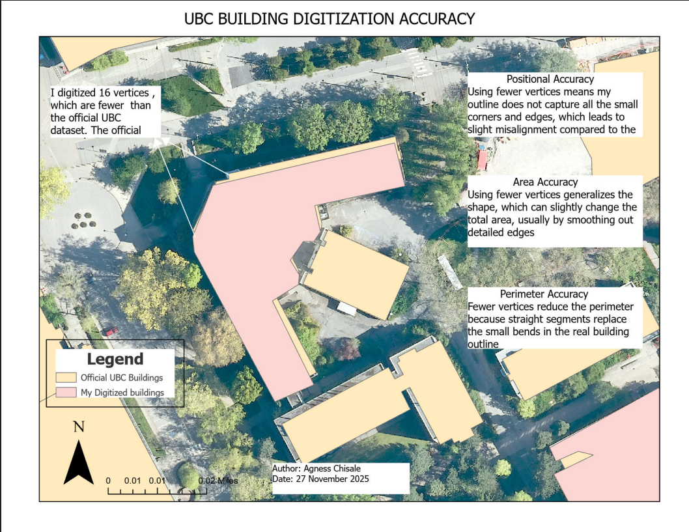

This project explores version control for geospatial data using Git and Kart, and practices feature digitization in both QGIS and ArcGIS Pro. Campus tree locations at UBC Vancouver were edited and validated against a recent orthophoto using Kart's branching and merging capabilities. Five campus buildings were then manually digitized in ArcGIS Pro and compared against the official UBC building dataset to evaluate positional and geometric accuracy.
| Layer | Description | Source |
|---|---|---|
ubcv_campus_trees | Point layer of trees on UBC Vancouver campus | UBC PostgreSQL Server |
UBC_ORTHOPHOTO_YEAR_COG.tif | Most recent UBC Vancouver orthophoto (Cloud Optimized GeoTiff) | MGEM Orthophoto Data Store |
ubcv_buildings | Official UBC Campus building polygons | UBC PostgreSQL Server |
| Tool | Purpose |
|---|---|
| Git | Distributed version control for file tracking |
| Kart (QGIS plugin) | Version control extended to geospatial vector data |
| QGIS | Editing point features and inspecting diffs |
| ArcGIS Pro | Digitizing building polygons and geometry calculations |
Campus tree points were imported into a local Kart repository and compared against a UBC orthophoto. Point locations were corrected and new trees were added through an editing session, with changes committed to version control. A separate branch was created to simulate collaborative editing, and a merge conflict was intentionally triggered and resolved. Five UBC buildings were then digitized as polygons in ArcGIS Pro using the orthophoto as a reference, and geometry metrics (area, perimeter, vertex count) were compared against the official UBC buildings dataset.

Annotated map comparing digitized building vertices against the official UBC dataset, with discussion of accuracy implications